共享式网络嗅探实验
实验原理
1、网络嗅探基础知识及原理
1.1预备知识
网络嗅探对于一般的网络来说，操作极其简单但威胁却是巨大的，很多黑客使用嗅探器进行网络入侵。网络嗅探器对信息安全的威胁来自其被动性和非干扰性，使得网络嗅探具有很强的隐蔽性，往往让网络信息泄密变得不容易被发现。
1.2嗅探器介绍
嗅探器的英文写法是Sniffer ，可以理解为一个安装在计算机上的窃听设备，它可以用来窃听计算机在网络上所产生的众多的信息。简单做一比较：一部电话的窃听装置, 可以用来窃听双方通话的内容，那么计算机网络嗅探器则可以用来窃听计算机程序在网络上发送和接收到的数据。
由于计算机直接所传送的数据是大量的二进制数据。因此, 一个网络窃听程序必须使用特定的网络协议来解析嗅探到的数据，所以嗅探器必须能够识别出对应于这个数据片断的传输协议，只有这样才能够进行正确的解码。
计算机的嗅探器比起电话窃听器，有他独特的优势：很多计算机网络采用的是“共享媒体"。 也就是说，窃听不必中断通信，也无需配置特别的线路安装嗅探器，而可以在任何连接着的网络上直接窃听到同一掩码范围内的计算机网络数据。我们称这种窃听方式为“基于混杂模式的嗅探”（promiscuous
mode）。尽管如此，这种“共享” 的技术发展的很快，正在转向“交换” 技术，这种技术会长期继续使用下去，它可以实现有目的选择收发数据。
1.3 嗅探器的工作原理
由于以太网的数据传输是基于“共享”原理的：所有的同一本地网范围内的计算机共同接收到相同的数据包。这意味着计算机直接的通信都是透明可见的。为此，以太网卡都构造了硬件的“过滤器”，将与自己无关的网络信息过滤掉。这在事实上是忽略掉了与自身MAC地址不符合的信息。
嗅探程序正是利用这个特点主动的将这个过滤器关闭掉，即设置网卡为“混杂模式”。因此，嗅探程序就能够接收到整个以太网内的网络数据信息了。
嗅探器(sniffer) 是利用计算机的网络接口截获目的地为其他计算机的数据报文的一种技术。它工作在网络的底层，把网络传输的全部数据记录下来。 嗅探器可以帮助网络管理员查找网络漏洞和检测网络性能。嗅探器可以分析网络的流量,以便找出所关心的网络中潜在的问题。不同传输介质的网络的可监听性是不同的。一般来说，以太网被监听的可能性比较高，因为以太网是一个广播型的网络；FDDI Token被监听的可能性也比较高，尽管它并不是一个广播型网络，但带有令牌的那些数据包在传输过程中，平均要经过网络上一半的计算机；微波和无线网被监听的可能性同样比较高，因为无线电本身是一个广播型的传输媒介，弥散在空中的无线电信号可以被很轻易的截获。一般情况下，大多数的嗅探器至少能够分析下面的协议：
1.
标准以太网
2.
TCP/IP
3.
IPX
4.
DECNET
5.
FDDI Token
6.
微波和无线网
实际应用中的嗅探器分软、硬两种。软件嗅探器易于使用，缺点是往往无法抓取网络上所有的传输数据(比如碎片)，也就可能无法全面了解网络的故障和运行情况；硬件嗅探器通常称为协议分析仪，它的优点恰恰是软件嗅探器所欠缺的，但是价格昂贵。
嗅探器捕获真实的网络报文。嗅探器通过将其置身于网络接口来达到这个目的--例如将以太网卡设置成杂收模式。数据在网络上是以帧(Frame)的单位传输的。帧通过特定的称为网络驱动程序的软件进行成型，然后通过网卡发送到网线上。通过网线到达它们的目的机器，在目的机器的一端执行相反的过程。接收端机器的以太网卡捕获到这些帧，并告诉操作系统帧的到达，然后对其进行存储。就是在这个发送、传输和接收的过程中，每一个在LAN上的工作站或主机都有其硬件地址。这些地址唯一地表示着网络上的机器。当用户发送一个报文时，这些报文就会发送到LAN上所有可用的机器。在一般情况下，网络上所有的机器都可以“听”到通过的流量，但对不属于自己的报文则不予响应。如果某个工作站的网络接口处于杂收模式，那么它就可以捕获网络上所有的报文和帧，如果一个工作站被配置成这样的方式，它（包括其软件）就是一个嗅探器。这也是嗅探器会造成安全方面的问题的原因。通常使用嗅探器的入侵者，都必须拥有基点用来放置嗅探器。对于外部入侵者来说，能通过入侵外网服务器，往内部工作站发送木马等获得嗅探器的放置点，然后放置其嗅探器，而内部破坏者就能够直接获得嗅探器的放置点，比如使用附加的物理设备作为嗅探器(例如，他们可以将嗅探器接在网络的某个点上，而这个点通常用肉眼不容易发现。除非人为地对网络中的每一段网线进行检测，没有其他容易的方法能够识别出这种连接。当然，网络拓扑映射工具能够检测到额外的IP地址)。
1.4网络嗅探软件
目前网络嗅探软件工具有很多，Linux、Unix环境下的嗅探器有：Tcpdump、Nmap、Linuxsniffer、hunt、sniffit 等，Windows 环境下的嗅探器有：iptools、windump 、netxray、sniffer pro、 commview 和iris 等。网络嗅探软件工具Sniffer Pro是最著名的嗅探器。Sniffer软件是NAI公司推出的功能强大的协议分析软件。本实验主要使用Sniffer Pro进行网络分析。Sniffer Pro是在Netxray的基础上发展开发的，与Netxray比较，Sniffer支持的协议更丰富，例如PPPOE协议等在Netxray并不支持，在Sniffer上能够进行快速解码分析。Netxray不能在Windows 2000和Windows XP上正常运行，Sniffer Pro可以运行在各种Windows平台上。
Sniffer软件比较大，运行时需要的计算机内存比较大，否则运行比较慢，这也是它与Netxray相比的一个缺点。
下面列出了Sniffer软件的一些功能介绍，其功能的详细介绍可以参考Sniffer的在线帮助。
1.
捕获网络流量进行详细分析
2.
利用专家分析系统诊断问题
3.
实时监控网络活动
4.
收集网络利用率和错误等
在进行流量捕获之前首先选择网络适配器，确定从计算机的哪个网络适配器上接收数据,如图1。位置：File->select
settings

图1 适配器设置
选择网络适配器后才能正常工作。该软件安装在Windows 98操作系统上，Sniffer可以选择拨号适配器对窄带拨号进行操作。如果安装了EnterNet500等PPPOE软件还可以选择虚拟出的PPPOE网卡。对于安装在Windows 2000/XP上则无上述功能，这和操作系统有关。
本实验将对报文的捕获几网络性能监视等功能进行详细的介绍。下图2为在软件中快捷键的位置。
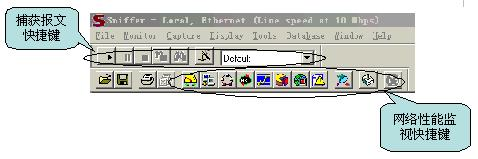
图2 sniffer快捷键
2、网络监视功能
网络监视功能能够时刻监视网络统计，网络上资源的利用率，并能够监视网络流量的异常状况。
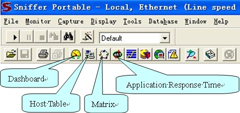
图3 网络监视
（1）Dashbord
Dashbord可以监控网络的利用率，流量及错误报文等内容。
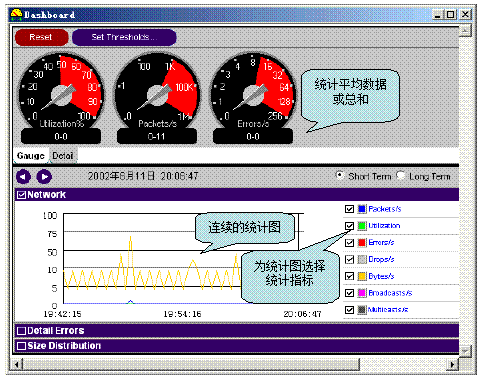
图4 Dashbord
（2）Host Table
监视每个网络节点的流量。
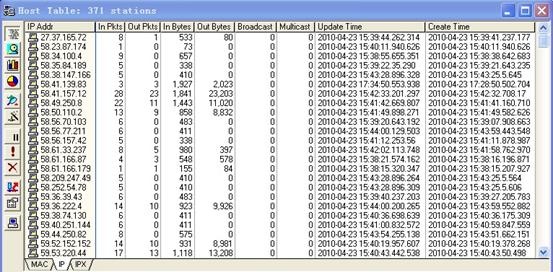
图5 Host Table
（3）Matrix
监视网络节点之间的联系。
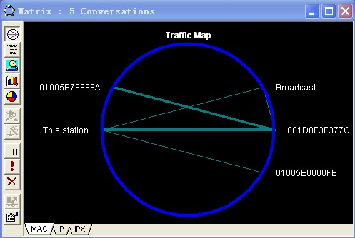
图6 Matrix
（4）Application Response Time (ART)
监视TCP/UDP应用层程序在客户端和服务器响应时间，如HTTP,FTP,DNS等应用。
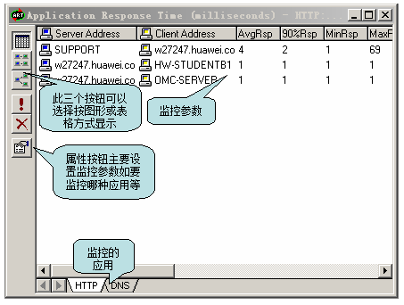
图7 Application Response Time
3、报文捕获解析
（1）报文捕获面板
报文捕获可以在报文捕获面板中完成，如下图（图中显示的是处于开始状态的面板）：
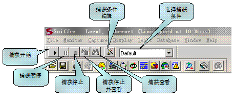
图8 捕获面板的功能图
（2）捕获报文统计
在捕获过程中可以通过查看下面捕获过程报文统计面板查看捕获报文的数量和缓冲区的利用率。
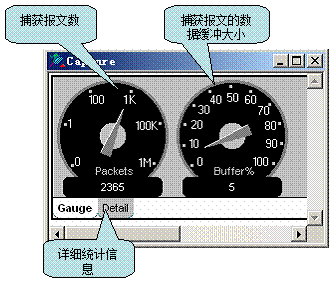
图9 捕获报文统计
（3）捕获报文查看
Sniffer捕获报文查看如下图所示，对于捕获的报文提供了一个Expert专家分析系统进行分析，还有解码选项及图形和表格的统计信息。
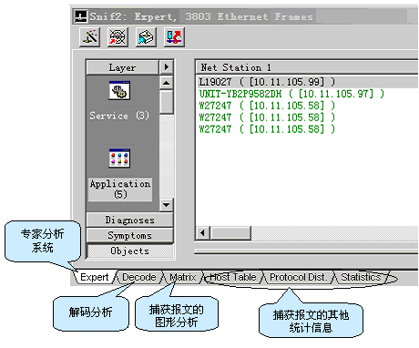
图10捕获报文查看
专家分析系统提供了一个可能的分析平台，对网络上的流量进行了一些分析对于分析出的诊断结果可以查看在线帮助获得。下图中显示出在网络中WINS查询失败的次数及TCP重传的次数统计等内容，可以方便了解网络中高层协议出现故障的可能点。对于某项统计分析可以通过用鼠标双击此条记录可以查看详细统计信息且对于每一项都可以通过查看帮助来了解起产生的原因。
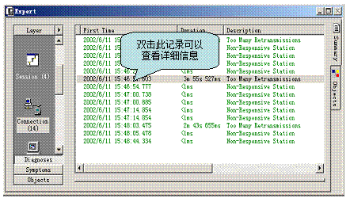
图11 专家分析系统
下图是对捕获报文进行解码的显示，通常分为三部分，目前大部分此类软件结构都采用这种结构显示。对于解码主要要求分析人员对协议比较熟悉，这样才能看懂解析出来的报文。使用该软件是很简单的事情，要能够利用软件解码分析来解决问题关键是要对各种层次的协议了解的比较透彻。对于MAC地址，Snffier软件进行了头部的替换，如00e0fc开头的就替换成Huawei，这样有利于了解网络上各种相关设备的制造厂商信息。
显示报文如下图所示：
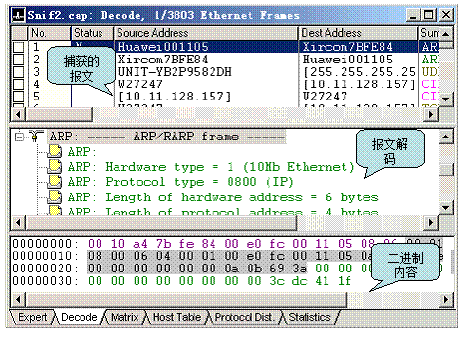
图12 解码
（4）设置捕获条件
基本的捕获条件有如下两种：
链路层捕获:按源MAC和目的MAC地址进行捕获，输入方式为十六进制连续输入，如：00E0FC123456。
IP层捕获:按源IP和目的IP进行捕获。输入方式为点间隔方式，如：10.107.1.1。如果选择IP层捕获条件则ARP等报文将被过滤掉。
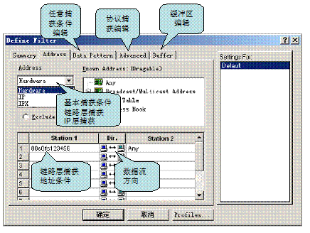
图13 设置捕获条件
在“Advance”页面下，可以编辑高级捕获条件，如图：
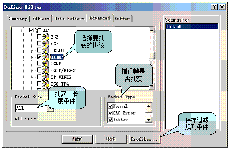
图14 高级捕获条件编辑图
在协议选择树中可以选择需要捕获的协议条件，如果什么都不选，则表示忽略该条件，捕获所有协议。在捕获帧长度条件下，可以捕获等于、小于或大于某个值的报文。在错误帧是否捕获栏，可以选择当网络上有如下错误时是否捕获。在保存过滤规则条件按钮“Profiles”，可以将当前设置的过滤规则，进行保存。在捕获主面板中，可以选择保存的捕获条件。
在Data Pattern下，可以编辑任意捕获条件，如图：
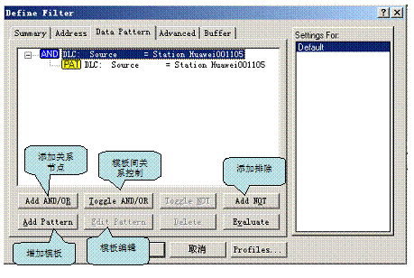
图15 编辑捕获条件
用这种方法可以实现复杂的报文过滤。
4、防御技术和方案
共享式局域网的局限性是集线器不会选择具体端口，在上面流通的数据是“你有，我也有”的，窃听者不需要进行任何更改，就可以进行数据监听，要解决这个问题，只要把集线器更换为交换机，杜绝这种毫无隐私的数据传播方式。